Tuesday 24 November 2026
Post 5: Your Boss Is Not Paying You To Be Busy. Your Boss Is Paying You To Produce Results.
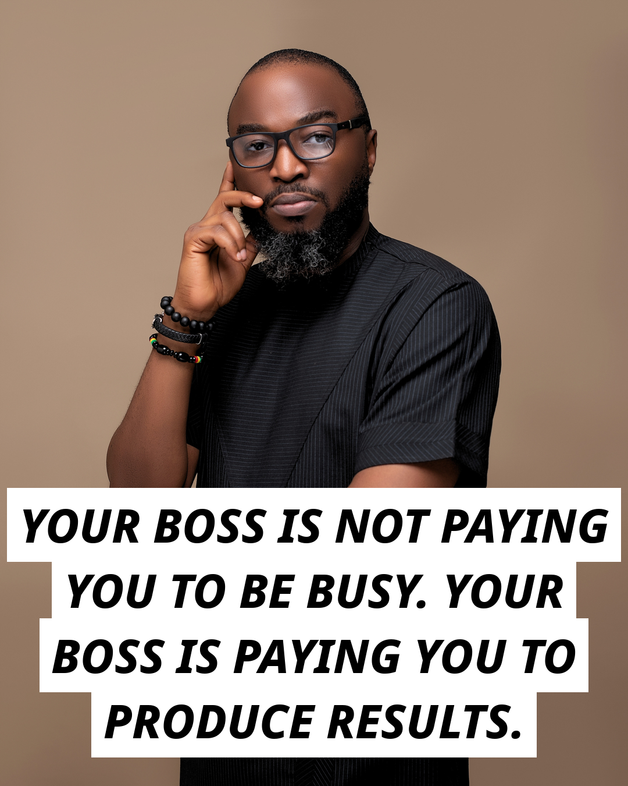

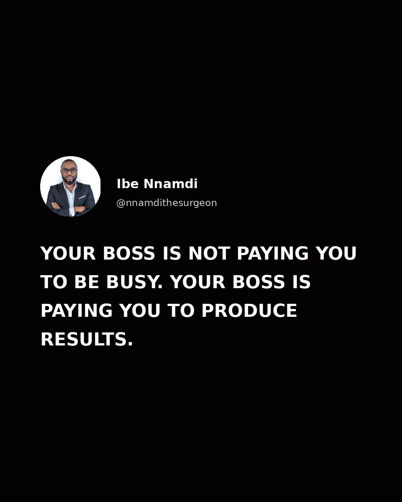

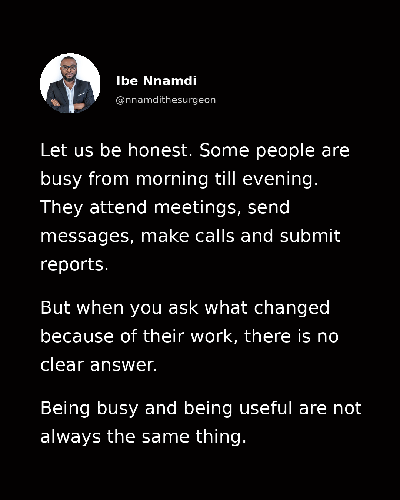

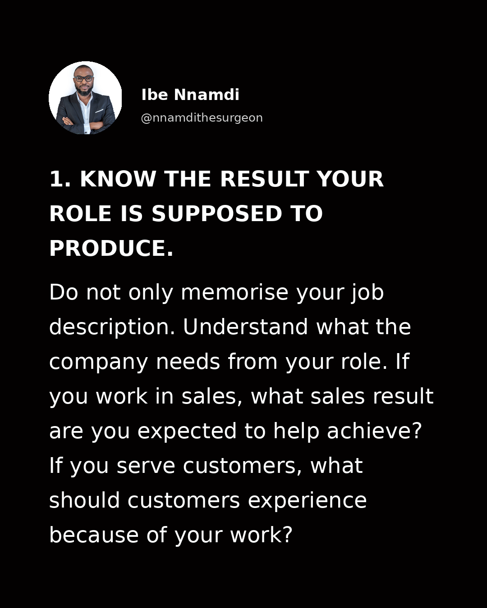

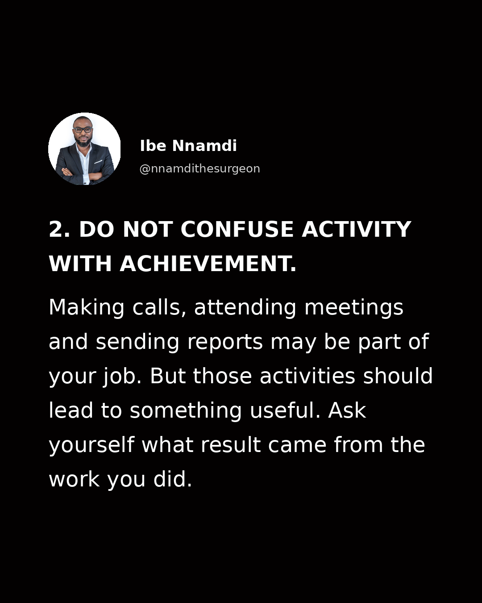

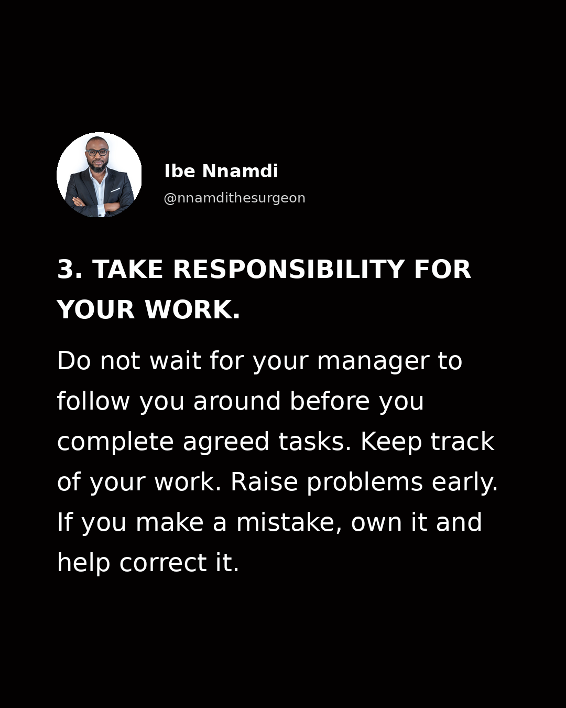

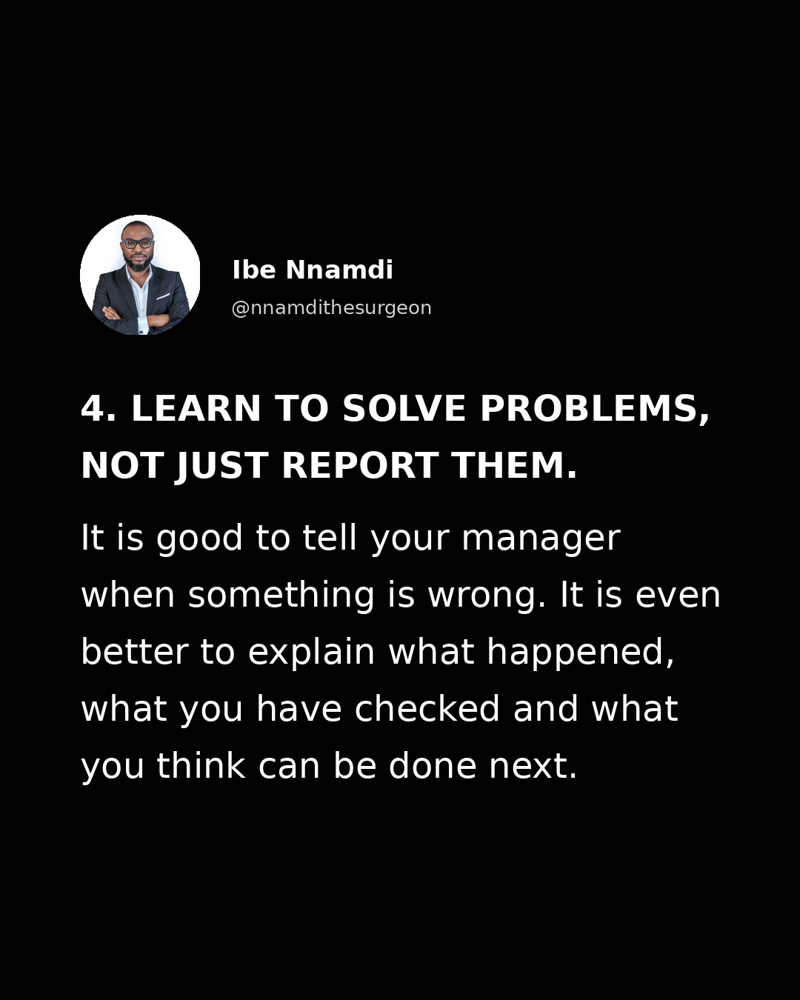

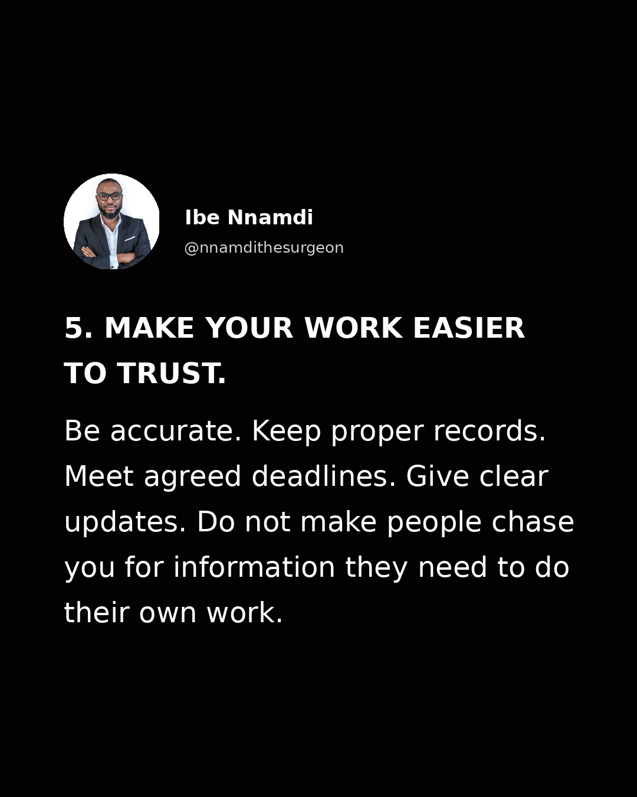

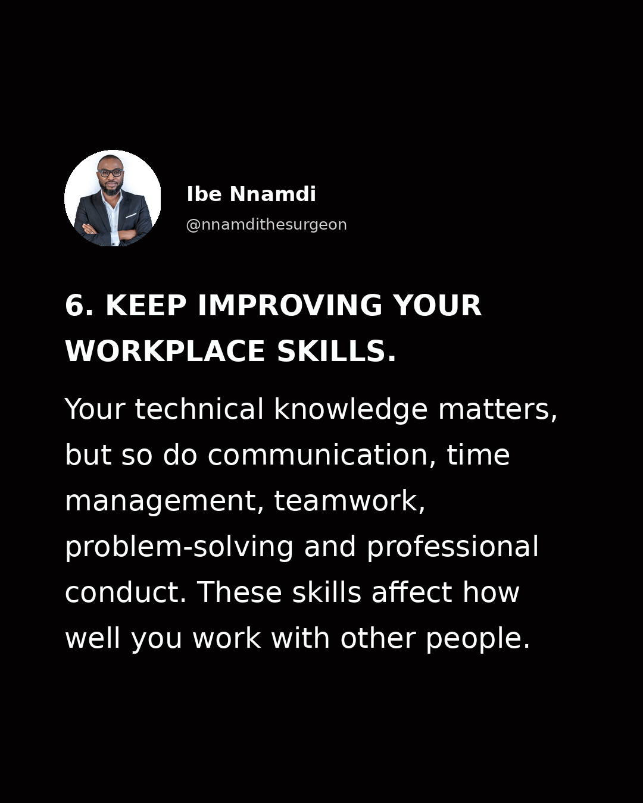

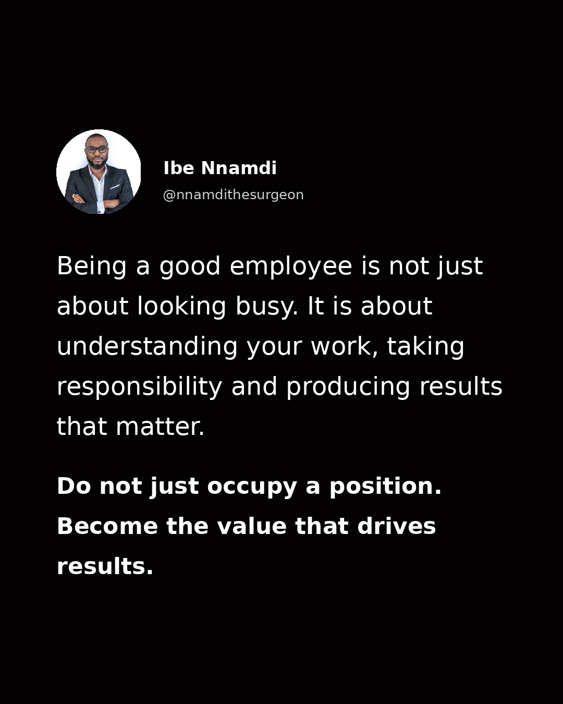

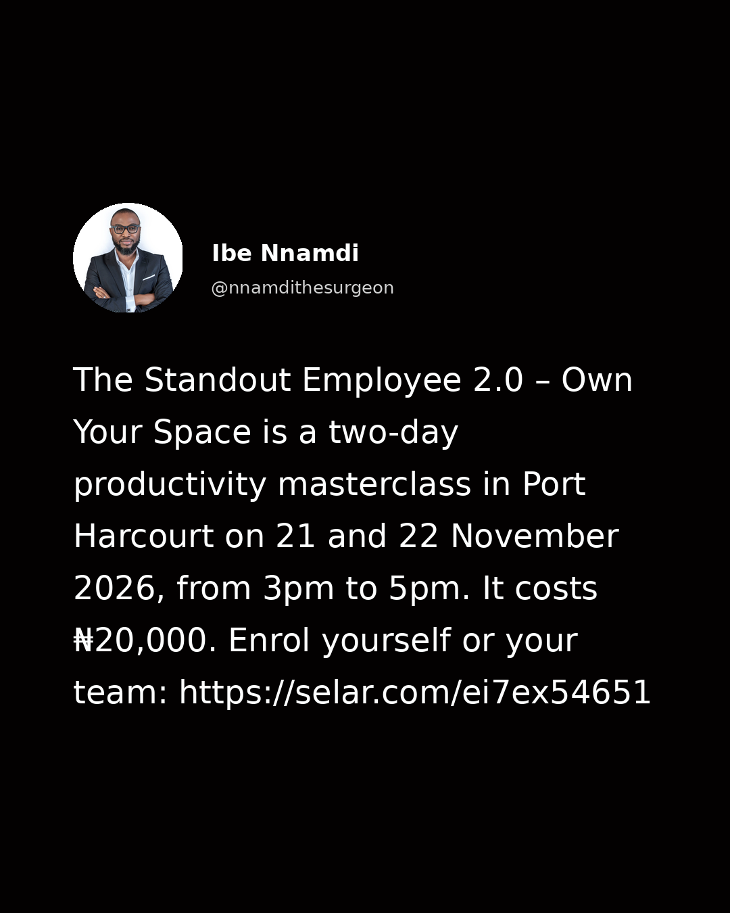

Facebook caption
Your Boss Is Not Paying You To Be Busy. Your Boss Is Paying You To Produce Results. Let us be honest. Some people are busy from morning till evening. They attend meetings, send messages, make calls and submit reports. But when you ask what changed because of their work, there is no clear answer. Being busy and being useful are not always the same thing.
Facebook first comment, Part 1
1. KNOW THE RESULT YOUR ROLE IS SUPPOSED TO PRODUCE. Do not only memorise your job description. Understand what the company needs from your role. If you work in sales, what sales result are you expected to help achieve? If you serve customers, what should customers experience because of your work?
Facebook first comment, Part 2
2. DO NOT CONFUSE ACTIVITY WITH ACHIEVEMENT. Making calls, attending meetings and sending reports may be part of your job. But those activities should lead to something useful. Ask yourself what result came from the work you did.
Facebook first comment, Part 3
3. TAKE RESPONSIBILITY FOR YOUR WORK. Do not wait for your manager to follow you around before you complete agreed tasks. Keep track of your work. Raise problems early. If you make a mistake, own it and help correct it.
Facebook first comment, Part 4
4. LEARN TO SOLVE PROBLEMS, NOT JUST REPORT THEM. It is good to tell your manager when something is wrong. It is even better to explain what happened, what you have checked and what you think can be done next.
Facebook first comment, Part 5
5. MAKE YOUR WORK EASIER TO TRUST. Be accurate. Keep proper records. Meet agreed deadlines. Give clear updates. Do not make people chase you for information they need to do their own work.
Facebook first comment, Part 6
6. KEEP IMPROVING YOUR WORKPLACE SKILLS. Your technical knowledge matters, but so do communication, time management, teamwork, problem-solving and professional conduct. These skills affect how well you work with other people.
Facebook first comment, Part 7
Being a good employee is not just about looking busy. It is about understanding your work, taking responsibility and producing results that matter. Do not just occupy a position. Become the value that drives results.
Facebook first comment, Part 8
The Standout Employee 2.0 - Own Your Space is a two-day productivity masterclass in Port Harcourt on 21 and 22 November 2026, from 3pm to 5pm. It costs ₦20,000. Enrol yourself or your team: https://selar.com/ei7ex54651
Instagram caption
Your Boss Is Not Paying You To Be Busy. Your Boss Is Paying You To Produce Results. Let us be honest. Some people are busy from morning till evening. They attend meetings, send messages, make calls and submit reports. But when you ask what changed because of their work, there is no clear answer. Being busy and being useful are not always the same thing. Do not just occupy a position. Become the value that drives results. The Standout Employee 2.0 - Own Your Space is a two-day productivity masterclass in Port Harcourt on 21 and 22 November 2026, from 3pm to 5pm. It costs ₦20,000. Enrol yourself or your team: https://selar.com/ei7ex54651 - Nnamdi Ibe #NnamdiIbe #BusinessStructure #CompanyBuilding #CEOsEscape #BusinessGrowth
LinkedIn caption
Your Boss Is Not Paying You To Be Busy. Your Boss Is Paying You To Produce Results. Let us be honest. Some people are busy from morning till evening. They attend meetings, send messages, make calls and submit reports. But when you ask what changed because of their work, there is no clear answer. Being busy and being useful are not always the same thing. 1. KNOW THE RESULT YOUR ROLE IS SUPPOSED TO PRODUCE. Do not only memorise your job description. Understand what the company needs from your role. If you work in sales, what sales result are you expected to help achieve? If you serve customers, what should customers experience because of your work? 2. DO NOT CONFUSE ACTIVITY WITH ACHIEVEMENT. Making calls, attending meetings and sending reports may be part of your job. But those activities should lead to something useful. Ask yourself what result came from the work you did. 3. TAKE RESPONSIBILITY FOR YOUR WORK. Do not wait for your manager to follow you around before you complete agreed tasks. Keep track of your work. Raise problems early. If you make a mistake, own it and help correct it. 4. LEARN TO SOLVE PROBLEMS, NOT JUST REPORT THEM. It is good to tell your manager when something is wrong. It is even better to explain what happened, what you have checked and what you think can be done next. 5. MAKE YOUR WORK EASIER TO TRUST. Be accurate. Keep proper records. Meet agreed deadlines. Give clear updates. Do not make people chase you for information they need to do their own work. 6. KEEP IMPROVING YOUR WORKPLACE SKILLS. Your technical knowledge matters, but so do communication, time management, teamwork, problem-solving and professional conduct. These skills affect how well you work with other people. Being a good employee is not just about looking busy. It is about understanding your work, taking responsibility and producing results that matter. Do not just occupy a position. Become the value that drives results. The Standout Employee 2.0 - Own Your Space is a two-day productivity masterclass in Port Harcourt on 21 and 22 November 2026, from 3pm to 5pm. It costs ₦20,000. Enrol yourself or your team: https://selar.com/ei7ex54651 - Nnamdi Ibe #NnamdiIbe #BusinessStructure #CompanyBuilding #CEOsEscape #BusinessGrowth
Wednesday 25 November 2026
ChatGPT Interviews Me, Part 3
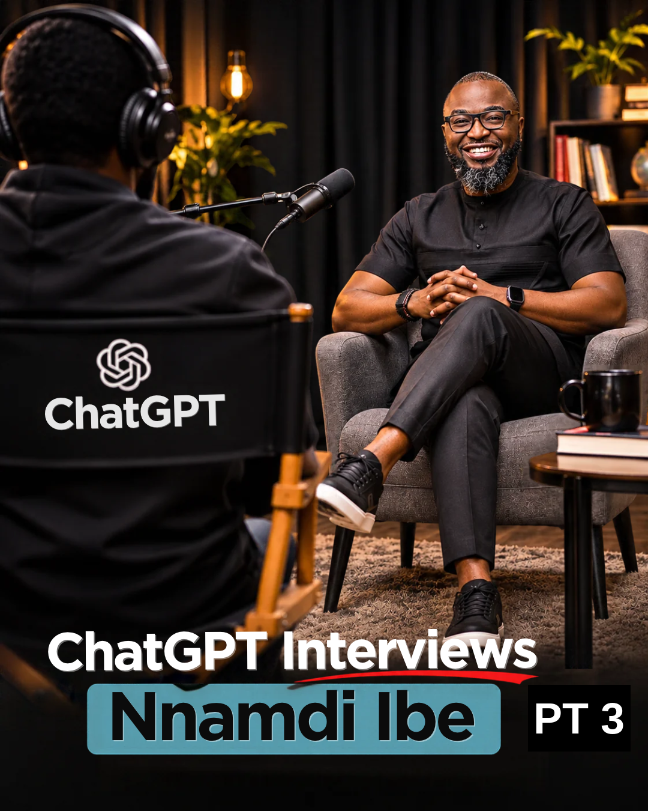

Facebook caption
ChatGPT Interviews Me , Part 3 Question 3: Have you ever hired someone who could do the job, but you still interfered because you felt you could do it better? What made you think I no longer have this sickness? I am still a perfectionist. I still struggle with wanting to do things myself because I believe I can do them better. I remember a period around 2011 or 2012 when my business development team would invite me to attend client meetings. My job should have been to show up, bring some executive presence and help close the deal when necessary. But what would I do? I would take over the meeting, do most of the talking and close the deal while my team watched. I also hired accountants, even though I was not a trained accountant, and would tell them how to do their jobs. Looking back, the problem was not always that the people could not do the work. Part of the problem was that I had not built good enough processes to help them do the work, improve it and take responsibility for it. Over the last 10 years, I have learnt to allow things to spoil small. When people make mistakes, I try to guide them through those mistakes instead of taking over everything. I have also become more deliberate about building processes. Work should follow clear steps, processes and policies, not just my personal opinion. And those processes should be open to improvement. - Nnamdi Ibe #NnamdiIbe #BusinessStructure #CompanyBuilding #CEOsEscape #BusinessGrowth
Instagram caption
ChatGPT Interviews Me , Part 3 Question 3: Have you ever hired someone who could do the job, but you still interfered because you felt you could do it better? What made you think I no longer have this sickness? I am still a perfectionist. I still struggle with wanting to do things myself because I believe I can do them better. I remember a period around 2011 or 2012 when my business development team would invite me to attend client meetings. My job should have been to show up, bring some executive presence and help close the deal when necessary. But what would I do? I would take over the meeting, do most of the talking and close the deal while my team watched. I also hired accountants, even though I was not a trained accountant, and would tell them how to do their jobs. Looking back, the problem was not always that the people could not do the work. Part of the problem was that I had not built good enough processes to help them do the work, improve it and take responsibility for it. Over the last 10 years, I have learnt to allow things to spoil small. When people make mistakes, I try to guide them through those mistakes instead of taking over everything. I have also become more deliberate about building processes. Work should follow clear steps, processes and policies, not just my personal opinion. And those processes should be open to improvement.
LinkedIn caption
ChatGPT Interviews Me , Part 3 Question 3: Have you ever hired someone who could do the job, but you still interfered because you felt you could do it better? What made you think I no longer have this sickness? I am still a perfectionist. I still struggle with wanting to do things myself because I believe I can do them better. I remember a period around 2011 or 2012 when my business development team would invite me to attend client meetings. My job should have been to show up, bring some executive presence and help close the deal when necessary. But what would I do? I would take over the meeting, do most of the talking and close the deal while my team watched. I also hired accountants, even though I was not a trained accountant, and would tell them how to do their jobs. Looking back, the problem was not always that the people could not do the work. Part of the problem was that I had not built good enough processes to help them do the work, improve it and take responsibility for it. Over the last 10 years, I have learnt to allow things to spoil small. When people make mistakes, I try to guide them through those mistakes instead of taking over everything. I have also become more deliberate about building processes. Work should follow clear steps, processes and policies, not just my personal opinion. And those processes should be open to improvement. - Nnamdi Ibe #NnamdiIbe #BusinessStructure #CompanyBuilding #CEOsEscape #BusinessGrowth
Thursday 26 November 2026
Post 6: Some Employees Want Promotion. But They Have Not Mastered The Job They Already Have.
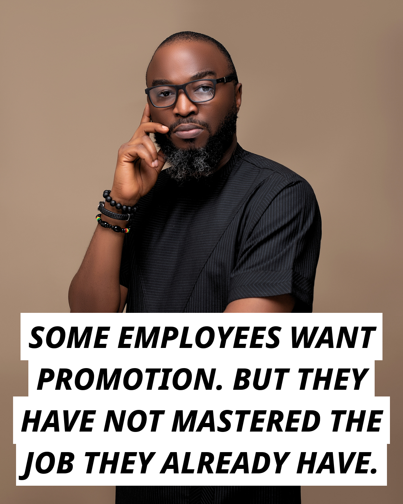

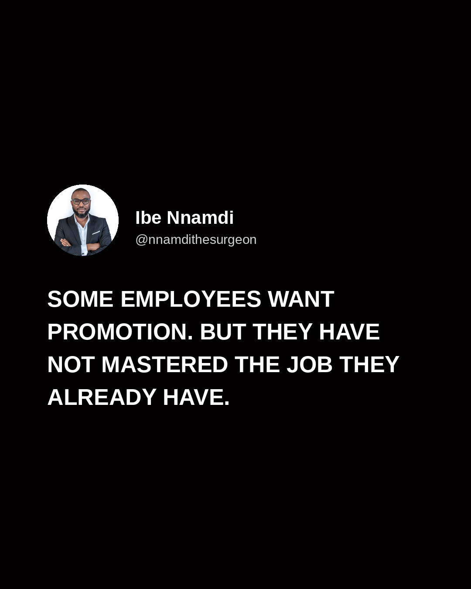

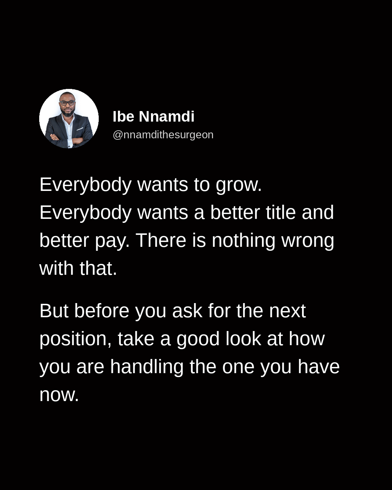

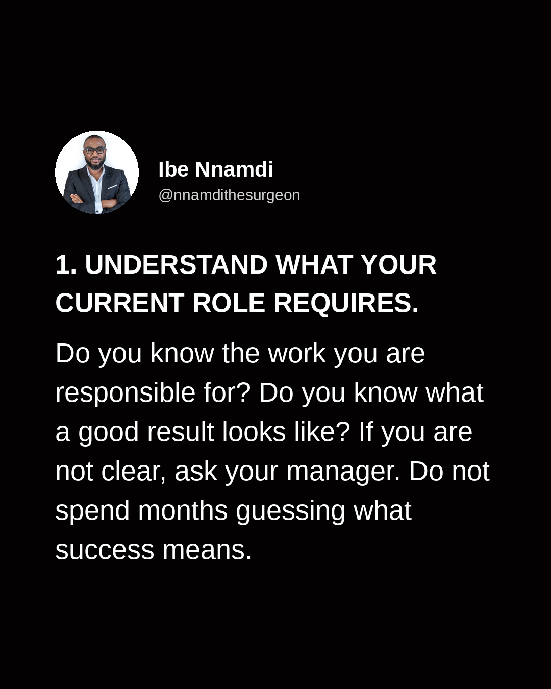

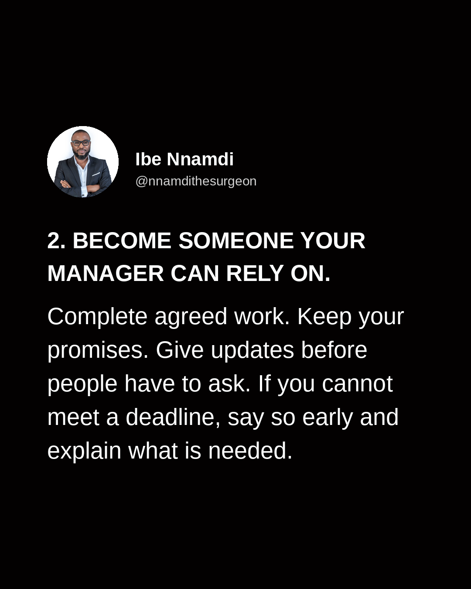

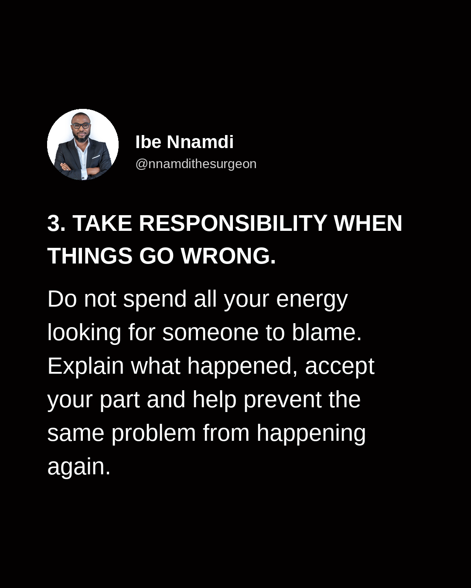

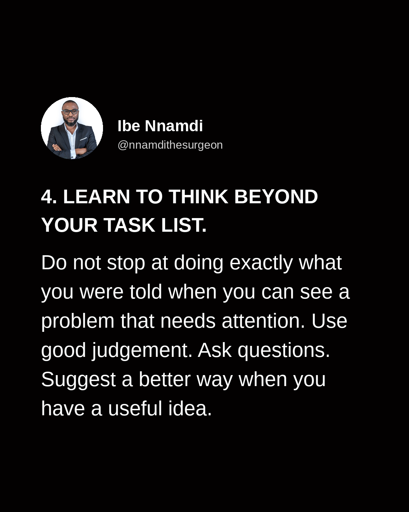

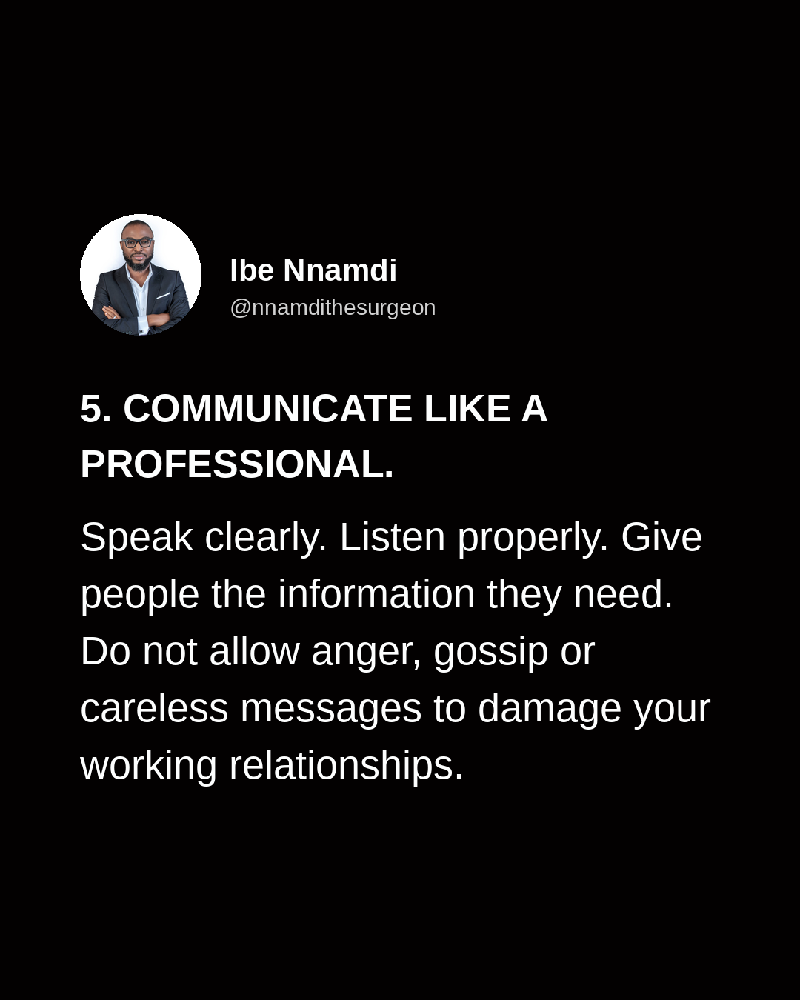

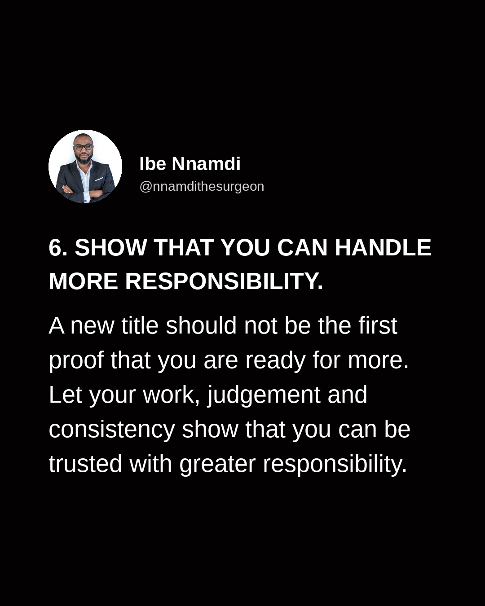

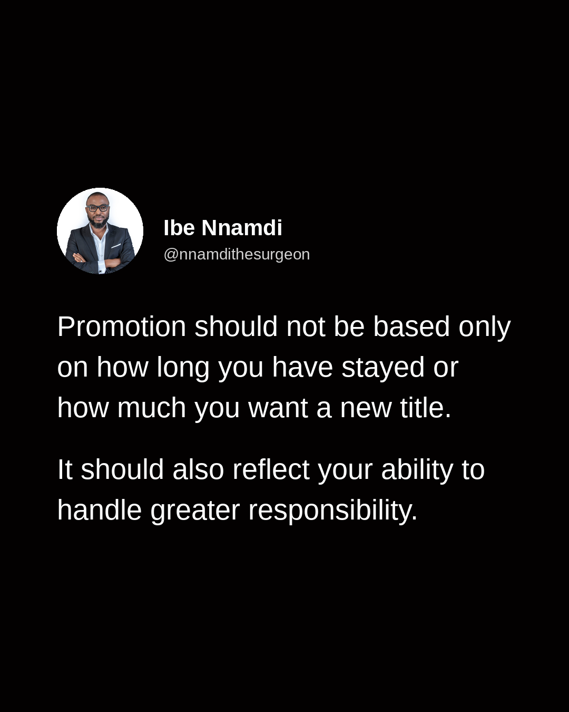

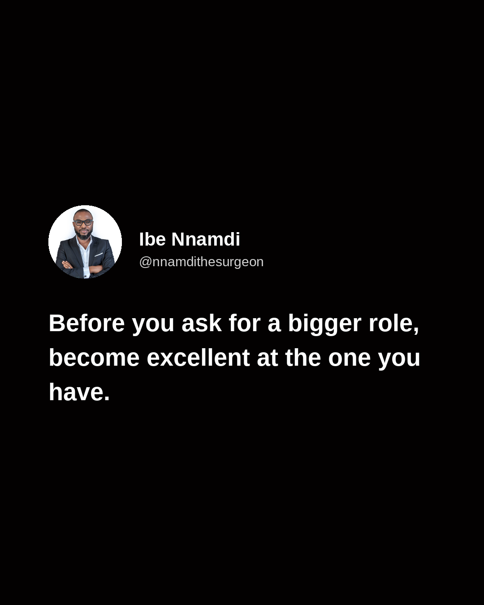

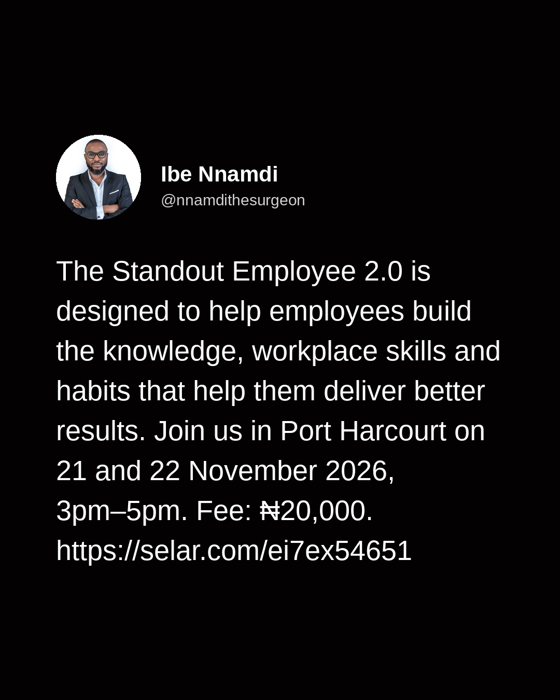

Facebook caption
Some Employees Want Promotion. But They Have Not Mastered The Job They Already Have. Everybody wants to grow. Everybody wants a better title and better pay. There is nothing wrong with that. But before you ask for the next position, take a good look at how you are handling the one you have now.
Facebook first comment, Part 1
1. UNDERSTAND WHAT YOUR CURRENT ROLE REQUIRES. Do you know the work you are responsible for? Do you know what a good result looks like? If you are not clear, ask your manager. Do not spend months guessing what success means.
Facebook first comment, Part 2
2. BECOME SOMEONE YOUR MANAGER CAN RELY ON. Complete agreed work. Keep your promises. Give updates before people have to ask. If you cannot meet a deadline, say so early and explain what is needed.
Facebook first comment, Part 3
3. TAKE RESPONSIBILITY WHEN THINGS GO WRONG. Do not spend all your energy looking for someone to blame. Explain what happened, accept your part and help prevent the same problem from happening again.
Facebook first comment, Part 4
4. LEARN TO THINK BEYOND YOUR TASK LIST. Do not stop at doing exactly what you were told when you can see a problem that needs attention. Use good judgement. Ask questions. Suggest a better way when you have a useful idea.
Facebook first comment, Part 5
5. COMMUNICATE LIKE A PROFESSIONAL. Speak clearly. Listen properly. Give people the information they need. Do not allow anger, gossip or careless messages to damage your working relationships.
Facebook first comment, Part 6
6. SHOW THAT YOU CAN HANDLE MORE RESPONSIBILITY. A new title should not be the first proof that you are ready for more. Let your work, judgement and consistency show that you can be trusted with greater responsibility.
Facebook first comment, Part 7
Promotion should not be based only on how long you have stayed or how much you want a new title. It should also reflect your ability to handle greater responsibility. Before you ask for a bigger role, become excellent at the one you have.
Facebook first comment, Part 8
The Standout Employee 2.0 is designed to help employees build the knowledge, workplace skills and habits that help them deliver better results. Join us in Port Harcourt on 21 and 22 November 2026, 3pm-5pm. Fee: ₦20,000. https://selar.com/ei7ex54651
Instagram caption
Some Employees Want Promotion. But They Have Not Mastered The Job They Already Have. Everybody wants to grow. Everybody wants a better title and better pay. There is nothing wrong with that. But before you ask for the next position, take a good look at how you are handling the one you have now. Before you ask for a bigger role, become excellent at the one you have. The Standout Employee 2.0 is designed to help employees build the knowledge, workplace skills and habits that help them deliver better results. Join us in Port Harcourt on 21 and 22 November 2026, 3pm-5pm. Fee: ₦20,000. https://selar.com/ei7ex54651 - Nnamdi Ibe #NnamdiIbe #BusinessStructure #CompanyBuilding #CEOsEscape #BusinessGrowth
LinkedIn caption
Some Employees Want Promotion. But They Have Not Mastered The Job They Already Have. Everybody wants to grow. Everybody wants a better title and better pay. There is nothing wrong with that. But before you ask for the next position, take a good look at how you are handling the one you have now. 1. UNDERSTAND WHAT YOUR CURRENT ROLE REQUIRES. Do you know the work you are responsible for? Do you know what a good result looks like? If you are not clear, ask your manager. Do not spend months guessing what success means. 2. BECOME SOMEONE YOUR MANAGER CAN RELY ON. Complete agreed work. Keep your promises. Give updates before people have to ask. If you cannot meet a deadline, say so early and explain what is needed. 3. TAKE RESPONSIBILITY WHEN THINGS GO WRONG. Do not spend all your energy looking for someone to blame. Explain what happened, accept your part and help prevent the same problem from happening again. 4. LEARN TO THINK BEYOND YOUR TASK LIST. Do not stop at doing exactly what you were told when you can see a problem that needs attention. Use good judgement. Ask questions. Suggest a better way when you have a useful idea. 5. COMMUNICATE LIKE A PROFESSIONAL. Speak clearly. Listen properly. Give people the information they need. Do not allow anger, gossip or careless messages to damage your working relationships. 6. SHOW THAT YOU CAN HANDLE MORE RESPONSIBILITY. A new title should not be the first proof that you are ready for more. Let your work, judgement and consistency show that you can be trusted with greater responsibility. Promotion should not be based only on how long you have stayed or how much you want a new title. It should also reflect your ability to handle greater responsibility. Before you ask for a bigger role, become excellent at the one you have. The Standout Employee 2.0 is designed to help employees build the knowledge, workplace skills and habits that help them deliver better results. Join us in Port Harcourt on 21 and 22 November 2026, 3pm-5pm. Fee: ₦20,000. https://selar.com/ei7ex54651 - Nnamdi Ibe #NnamdiIbe #BusinessStructure #CompanyBuilding #CEOsEscape #BusinessGrowth
Friday 27 November 2026
Post 7: If You Have To Remind An Employee To Do Everything, You May Not Have The Team You Think You Have.
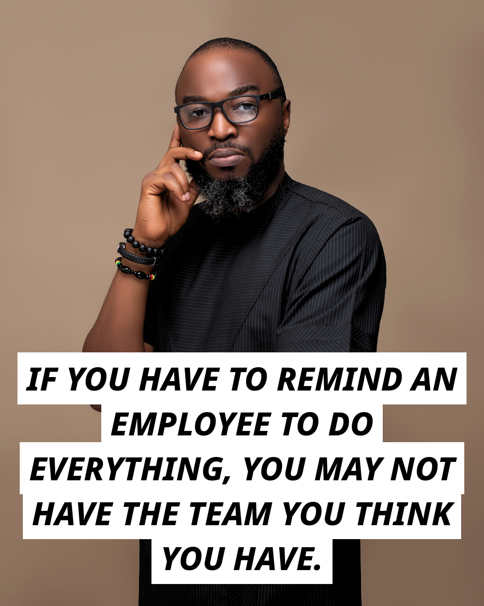

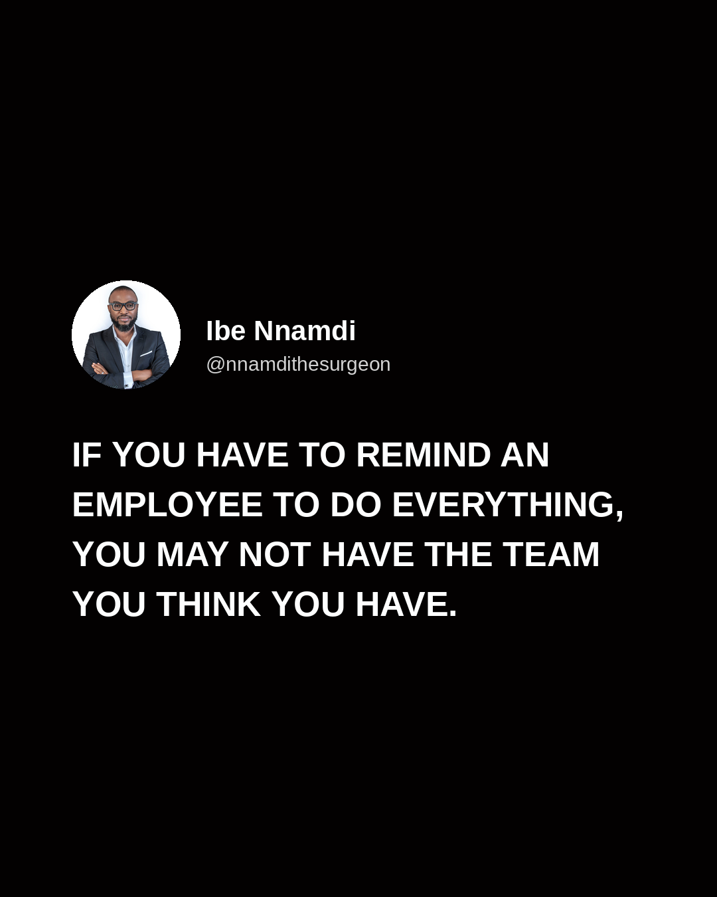

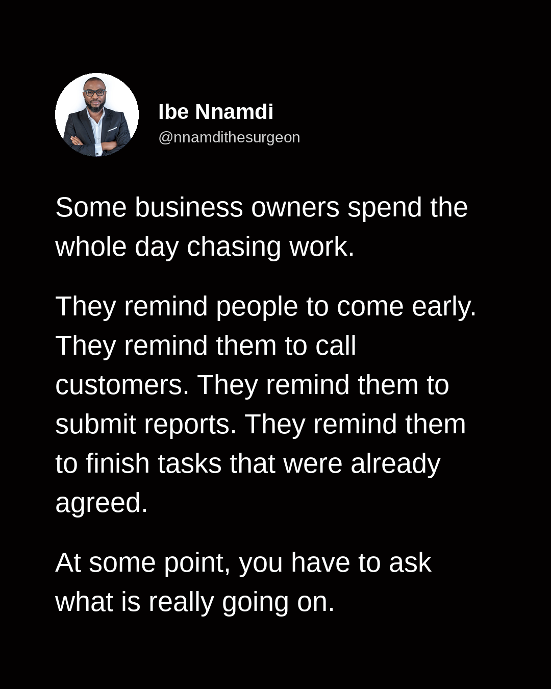

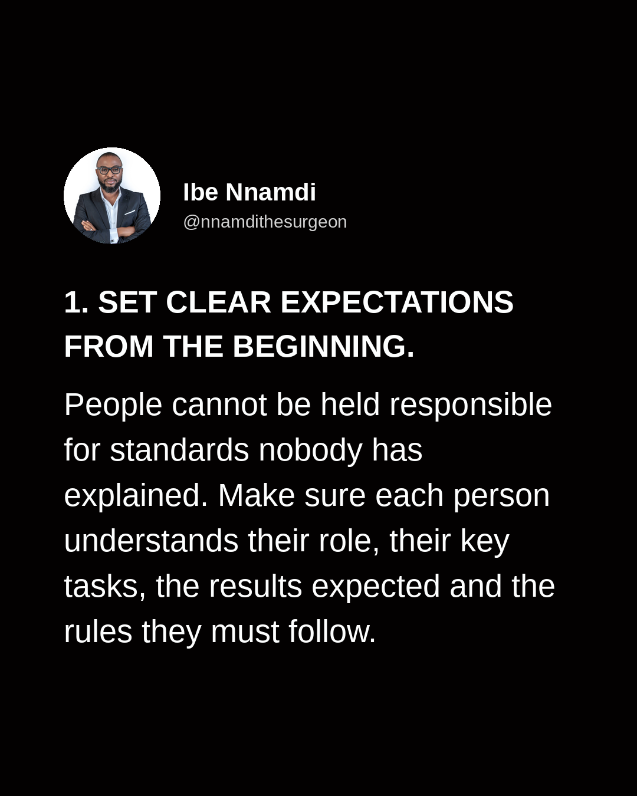

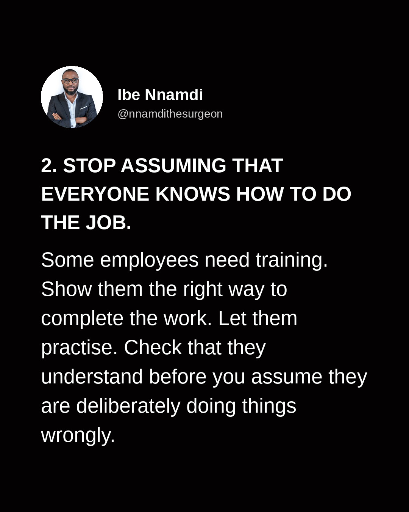

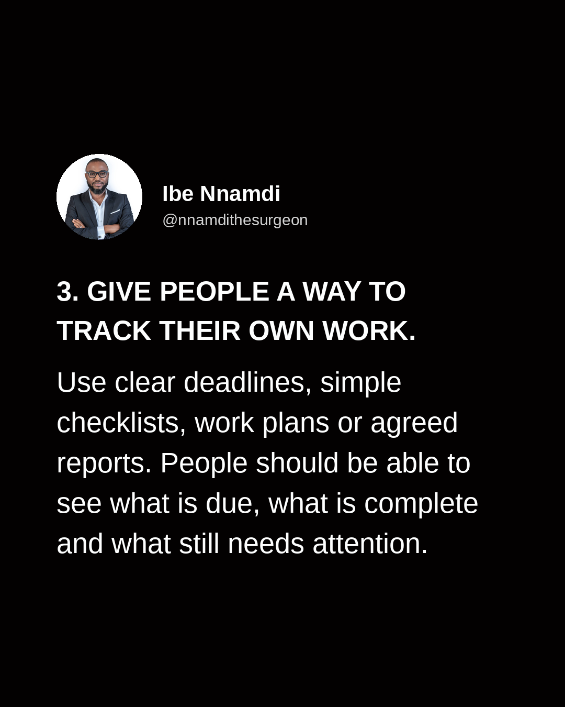

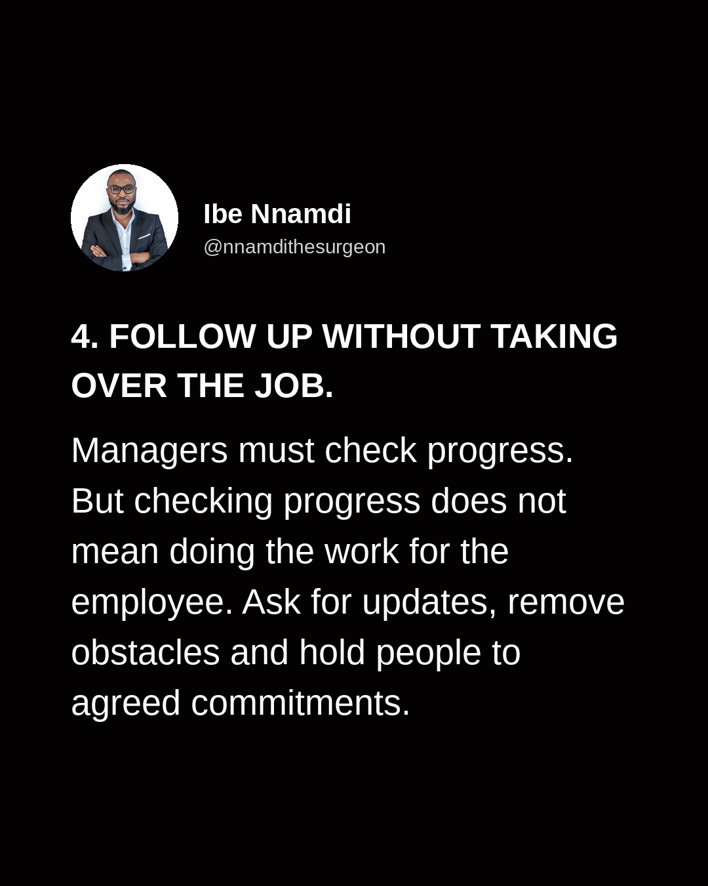

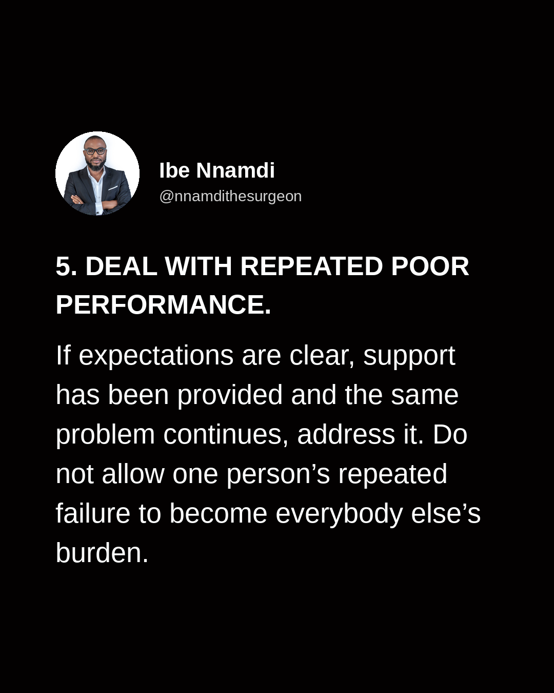

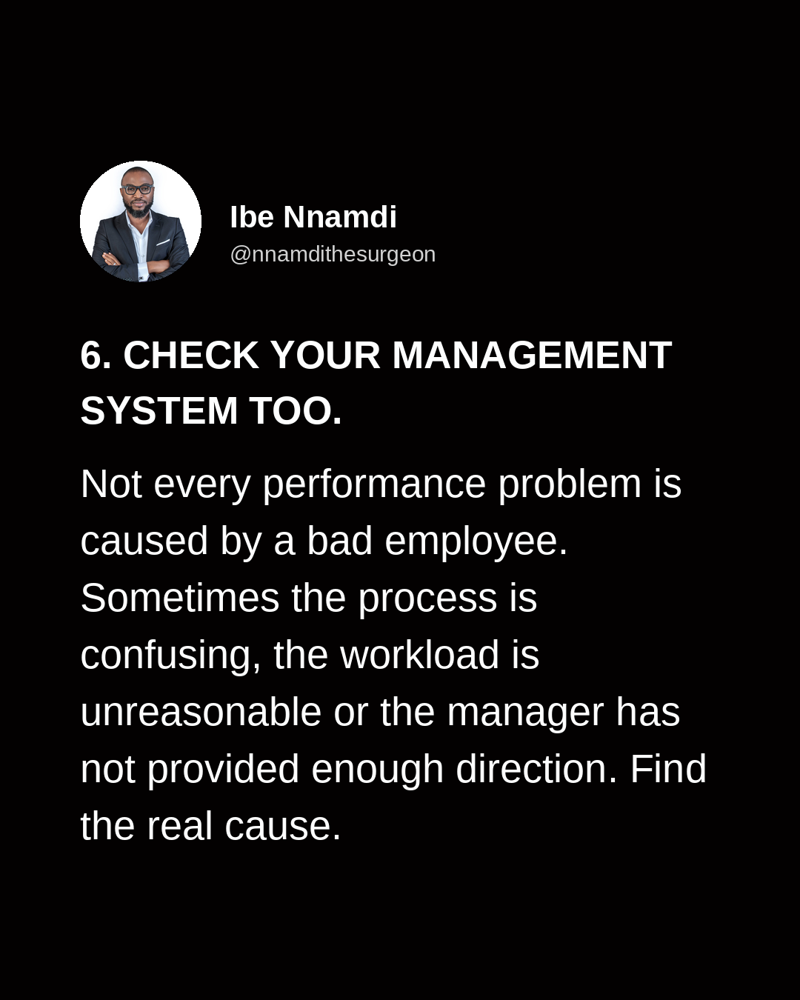

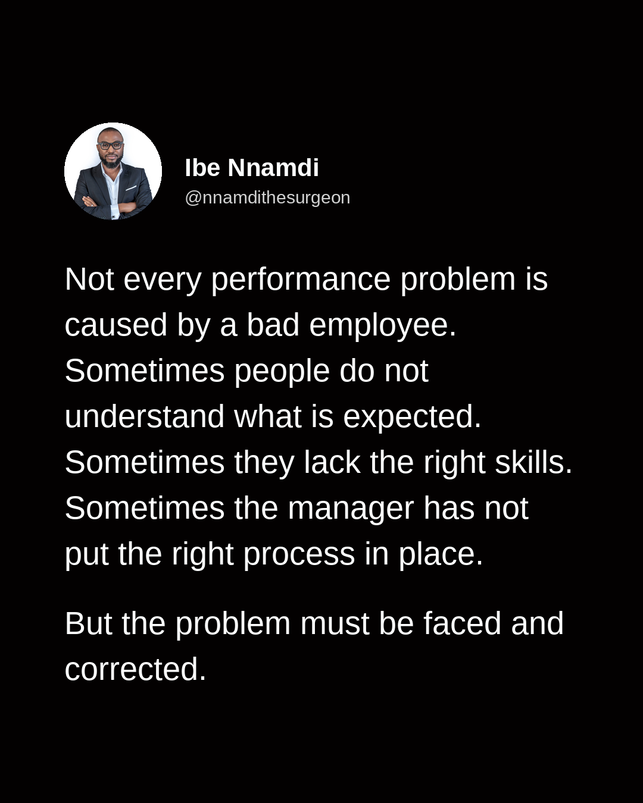

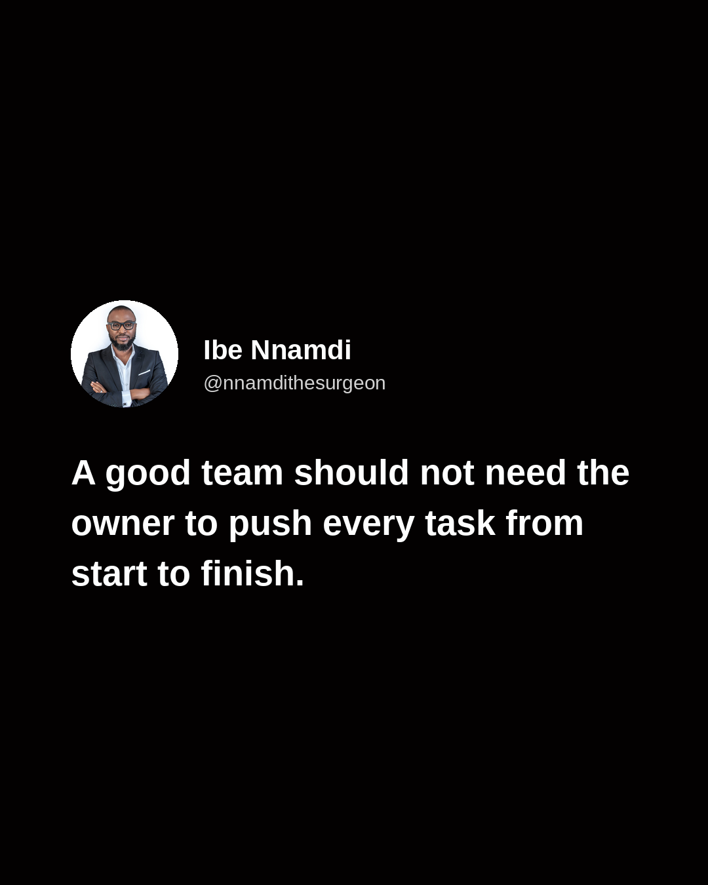

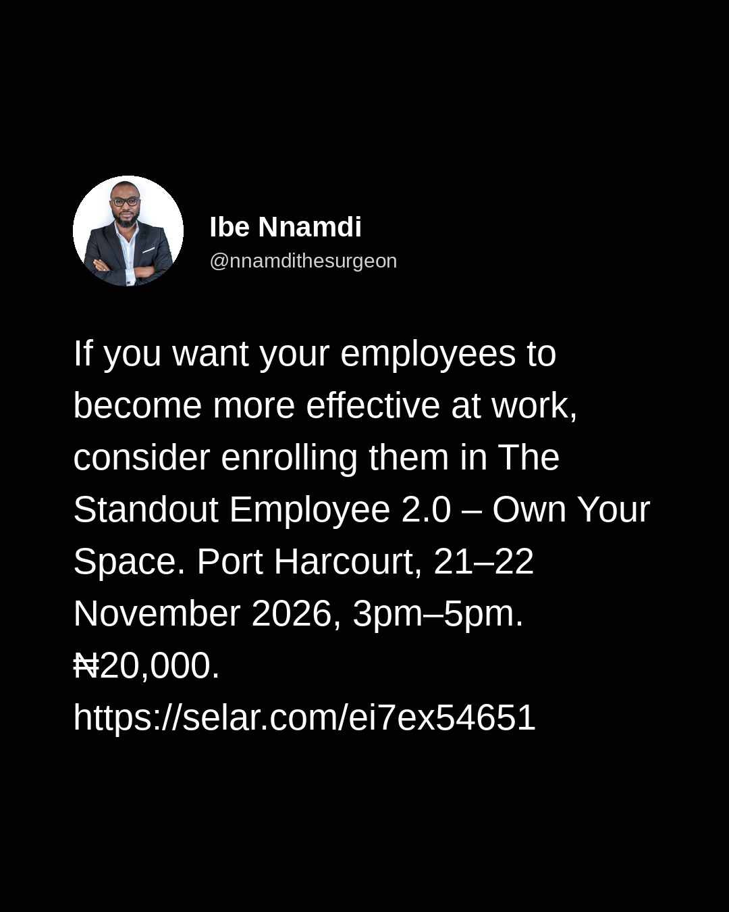

Facebook caption
If You Have To Remind An Employee To Do Everything, You May Not Have The Team You Think You Have. Some business owners spend the whole day chasing work. They remind people to come early. They remind them to call customers. They remind them to submit reports. They remind them to finish tasks that were already agreed. At some point, you have to ask what is really going on.
Facebook first comment, Part 1
1. SET CLEAR EXPECTATIONS FROM THE BEGINNING. People cannot be held responsible for standards nobody has explained. Make sure each person understands their role, their key tasks, the results expected and the rules they must follow.
Facebook first comment, Part 2
2. STOP ASSUMING THAT EVERYONE KNOWS HOW TO DO THE JOB. Some employees need training. Show them the right way to complete the work. Let them practise. Check that they understand before you assume they are deliberately doing things wrongly.
Facebook first comment, Part 3
3. GIVE PEOPLE A WAY TO TRACK THEIR OWN WORK. Use clear deadlines, simple checklists, work plans or agreed reports. People should be able to see what is due, what is complete and what still needs attention.
Facebook first comment, Part 4
4. FOLLOW UP WITHOUT TAKING OVER THE JOB. Managers must check progress. But checking progress does not mean doing the work for the employee. Ask for updates, remove obstacles and hold people to agreed commitments.
Facebook first comment, Part 5
5. DEAL WITH REPEATED POOR PERFORMANCE. If expectations are clear, support has been provided and the same problem continues, address it. Do not allow one person's repeated failure to become everybody else's burden.
Facebook first comment, Part 6
6. CHECK YOUR MANAGEMENT SYSTEM TOO. Not every performance problem is caused by a bad employee. Sometimes the process is confusing, the workload is unreasonable or the manager has not provided enough direction. Find the real cause.
Facebook first comment, Part 7
Not every performance problem is caused by a bad employee. Sometimes people do not understand what is expected. Sometimes they lack the right skills. Sometimes the manager has not put the right process in place. But the problem must be faced and corrected. A good team should not need the owner to push every task from start to finish.
Facebook first comment, Part 8
If you want your employees to become more effective at work, consider enrolling them in The Standout Employee 2.0 - Own Your Space. Port Harcourt, 21-22 November 2026, 3pm-5pm. ₦20,000. https://selar.com/ei7ex54651
Instagram caption
If You Have To Remind An Employee To Do Everything, You May Not Have The Team You Think You Have. Some business owners spend the whole day chasing work. They remind people to come early. They remind them to call customers. They remind them to submit reports. They remind them to finish tasks that were already agreed. At some point, you have to ask what is really going on. A good team should not need the owner to push every task from start to finish. If you want your employees to become more effective at work, consider enrolling them in The Standout Employee 2.0 - Own Your Space. Port Harcourt, 21-22 November 2026, 3pm-5pm. ₦20,000. https://selar.com/ei7ex54651 - Nnamdi Ibe #NnamdiIbe #BusinessStructure #CompanyBuilding #CEOsEscape #BusinessGrowth
LinkedIn caption
If You Have To Remind An Employee To Do Everything, You May Not Have The Team You Think You Have. Some business owners spend the whole day chasing work. They remind people to come early. They remind them to call customers. They remind them to submit reports. They remind them to finish tasks that were already agreed. At some point, you have to ask what is really going on. 1. SET CLEAR EXPECTATIONS FROM THE BEGINNING. People cannot be held responsible for standards nobody has explained. Make sure each person understands their role, their key tasks, the results expected and the rules they must follow. 2. STOP ASSUMING THAT EVERYONE KNOWS HOW TO DO THE JOB. Some employees need training. Show them the right way to complete the work. Let them practise. Check that they understand before you assume they are deliberately doing things wrongly. 3. GIVE PEOPLE A WAY TO TRACK THEIR OWN WORK. Use clear deadlines, simple checklists, work plans or agreed reports. People should be able to see what is due, what is complete and what still needs attention. 4. FOLLOW UP WITHOUT TAKING OVER THE JOB. Managers must check progress. But checking progress does not mean doing the work for the employee. Ask for updates, remove obstacles and hold people to agreed commitments. 5. DEAL WITH REPEATED POOR PERFORMANCE. If expectations are clear, support has been provided and the same problem continues, address it. Do not allow one person's repeated failure to become everybody else's burden. 6. CHECK YOUR MANAGEMENT SYSTEM TOO. Not every performance problem is caused by a bad employee. Sometimes the process is confusing, the workload is unreasonable or the manager has not provided enough direction. Find the real cause. Not every performance problem is caused by a bad employee. Sometimes people do not understand what is expected. Sometimes they lack the right skills. Sometimes the manager has not put the right process in place. But the problem must be faced and corrected. A good team should not need the owner to push every task from start to finish. If you want your employees to become more effective at work, consider enrolling them in The Standout Employee 2.0 - Own Your Space. Port Harcourt, 21-22 November 2026, 3pm-5pm. ₦20,000. https://selar.com/ei7ex54651 - Nnamdi Ibe #NnamdiIbe #BusinessStructure #CompanyBuilding #CEOsEscape #BusinessGrowth
Saturday 28 November 2026
ChatGPT Interviews Me, Part 4

Facebook caption
ChatGPT Interviews Me , Part 4 Question 4: What is the difference between hiring good people and building a good company? First, I think the idea of a good person is relative. Somebody may say a good employee is a loyal employee. Another person may say a good employee is somebody who gets results. Somebody else may even describe a person who reports everything happening in the business as a good employee. So I would rather ask this question: What is the difference between building an employee who gets results and building a company that gets results? At Grace Kapital, our micro-lending business, we had a business manager who had experience working in a microfinance bank. He was capable and knew his job. But many of our loan processes depended on his personal experience. We had not properly captured that knowledge in our processes. We had built too much around what he knew and what he could do. My understanding is that a good company should consistently and repeatedly deliver excellent results for its owners, customers and employees. Today, at Grace Kapital, we are building processes that people can operate. If somebody leaves, another person should be able to continue from where the previous person stopped. The company should keep delivering the results expected by its employees, investors, owners and customers. That is the difference. You do not want all the knowledge required to run your business to exist only in somebody's head. - Nnamdi Ibe #NnamdiIbe #BusinessStructure #CompanyBuilding #CEOsEscape #BusinessGrowth
Instagram caption
ChatGPT Interviews Me , Part 4 Question 4: What is the difference between hiring good people and building a good company? First, I think the idea of a good person is relative. Somebody may say a good employee is a loyal employee. Another person may say a good employee is somebody who gets results. Somebody else may even describe a person who reports everything happening in the business as a good employee. So I would rather ask this question: What is the difference between building an employee who gets results and building a company that gets results? At Grace Kapital, our micro-lending business, we had a business manager who had experience working in a microfinance bank. He was capable and knew his job. But many of our loan processes depended on his personal experience. We had not properly captured that knowledge in our processes. We had built too much around what he knew and what he could do. My understanding is that a good company should consistently and repeatedly deliver excellent results for its owners, customers and employees. Today, at Grace Kapital, we are building processes that people can operate. If somebody leaves, another person should be able to continue from where the previous person stopped. The company should keep delivering the results expected by its employees, investors, owners and customers. That is the difference. You do not want all the knowledge required to run your business to exist only in somebody's head.
LinkedIn caption
ChatGPT Interviews Me , Part 4 Question 4: What is the difference between hiring good people and building a good company? First, I think the idea of a good person is relative. Somebody may say a good employee is a loyal employee. Another person may say a good employee is somebody who gets results. Somebody else may even describe a person who reports everything happening in the business as a good employee. So I would rather ask this question: What is the difference between building an employee who gets results and building a company that gets results? At Grace Kapital, our micro-lending business, we had a business manager who had experience working in a microfinance bank. He was capable and knew his job. But many of our loan processes depended on his personal experience. We had not properly captured that knowledge in our processes. We had built too much around what he knew and what he could do. My understanding is that a good company should consistently and repeatedly deliver excellent results for its owners, customers and employees. Today, at Grace Kapital, we are building processes that people can operate. If somebody leaves, another person should be able to continue from where the previous person stopped. The company should keep delivering the results expected by its employees, investors, owners and customers. That is the difference. You do not want all the knowledge required to run your business to exist only in somebody's head. - Nnamdi Ibe #NnamdiIbe #BusinessStructure #CompanyBuilding #CEOsEscape #BusinessGrowth
Sunday 29 November 2026
ChatGPT Interviews Me, Part 5

Facebook caption
ChatGPT Interviews Me , Part 5 Question 5: Have you ever been so focused on keeping a business alive that you neglected something important for its long-term growth? It is not only about keeping the business alive. Sometimes, it is also about keeping yourself alive. Around 2015 or 2016, during the political transition from President Jonathan to President Buhari, we experienced a difficult period in our consulting business. We had been serving premium clients. But we lost many of those clients, and the business almost went down to zero. At that time, we had not yet started most of our other businesses. We did not have the hotel, Grace Kapital, the academy, marine services or the other businesses we have today. Consulting was our main business. We had to restrategise. My partner and I went back to doing a lot of the work ourselves. Some balls were dropped, and the quality of our work suffered in some areas. When your business is your main source of income, a difficult period can force you to focus almost entirely on survival. That experience helped shape how I think about business today. I make a distinction between three things: Trade: You bring something to the market, and somebody pays for it. Business: That trade continues to happen regularly. Company: The entity that carries the business and helps ensure that it continues. For a business to continue, trades must keep happening. Customers must keep buying. Money must keep coming in. If those things stop, you have a problem. That is why, in all our businesses, especially when we bring in new staff, I want everyone to understand three things, regardless of their role: How do we get customers? How do we serve and manage our customers? How do we get customers to buy again? That is the business. Everything else supports it. POST 6 - Nnamdi Ibe #NnamdiIbe #BusinessStructure #CompanyBuilding #CEOsEscape #BusinessGrowth
Instagram caption
ChatGPT Interviews Me , Part 5 Question 5: Have you ever been so focused on keeping a business alive that you neglected something important for its long-term growth? It is not only about keeping the business alive. Sometimes, it is also about keeping yourself alive. Around 2015 or 2016, during the political transition from President Jonathan to President Buhari, we experienced a difficult period in our consulting business. We had been serving premium clients. But we lost many of those clients, and the business almost went down to zero. At that time, we had not yet started most of our other businesses. We did not have the hotel, Grace Kapital, the academy, marine services or the other businesses we have today. Consulting was our main business. We had to restrategise. My partner and I went back to doing a lot of the work ourselves. Some balls were dropped, and the quality of our work suffered in some areas. When your business is your main source of income, a difficult period can force you to focus almost entirely on survival. That experience helped shape how I think about business today. I make a distinction between three things: Trade: You bring something to the market, and somebody pays for it. Business: That trade continues to happen regularly. Company: The entity that carries the business and helps ensure that it continues. For a business to continue, trades must keep happening. Customers must keep buying. Money must keep coming in. If those things stop, you have a problem. That is why, in all our businesses, especially when we bring in new staff, I want everyone to understand three things, regardless of their role: How do we get customers? How do we serve and manage our customers? How do we get customers to buy again? That is the business. Everything else supports it. POST 6
LinkedIn caption
ChatGPT Interviews Me , Part 5 Question 5: Have you ever been so focused on keeping a business alive that you neglected something important for its long-term growth? It is not only about keeping the business alive. Sometimes, it is also about keeping yourself alive. Around 2015 or 2016, during the political transition from President Jonathan to President Buhari, we experienced a difficult period in our consulting business. We had been serving premium clients. But we lost many of those clients, and the business almost went down to zero. At that time, we had not yet started most of our other businesses. We did not have the hotel, Grace Kapital, the academy, marine services or the other businesses we have today. Consulting was our main business. We had to restrategise. My partner and I went back to doing a lot of the work ourselves. Some balls were dropped, and the quality of our work suffered in some areas. When your business is your main source of income, a difficult period can force you to focus almost entirely on survival. That experience helped shape how I think about business today. I make a distinction between three things: Trade: You bring something to the market, and somebody pays for it. Business: That trade continues to happen regularly. Company: The entity that carries the business and helps ensure that it continues. For a business to continue, trades must keep happening. Customers must keep buying. Money must keep coming in. If those things stop, you have a problem. That is why, in all our businesses, especially when we bring in new staff, I want everyone to understand three things, regardless of their role: How do we get customers? How do we serve and manage our customers? How do we get customers to buy again? That is the business. Everything else supports it. POST 6 - Nnamdi Ibe #NnamdiIbe #BusinessStructure #CompanyBuilding #CEOsEscape #BusinessGrowth
Monday 30 November 2026
Post 8: Your Children May Inherit Your Business. That Does Not Mean They Are Ready To Run It.
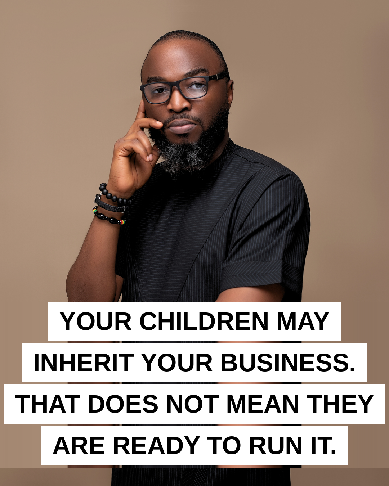

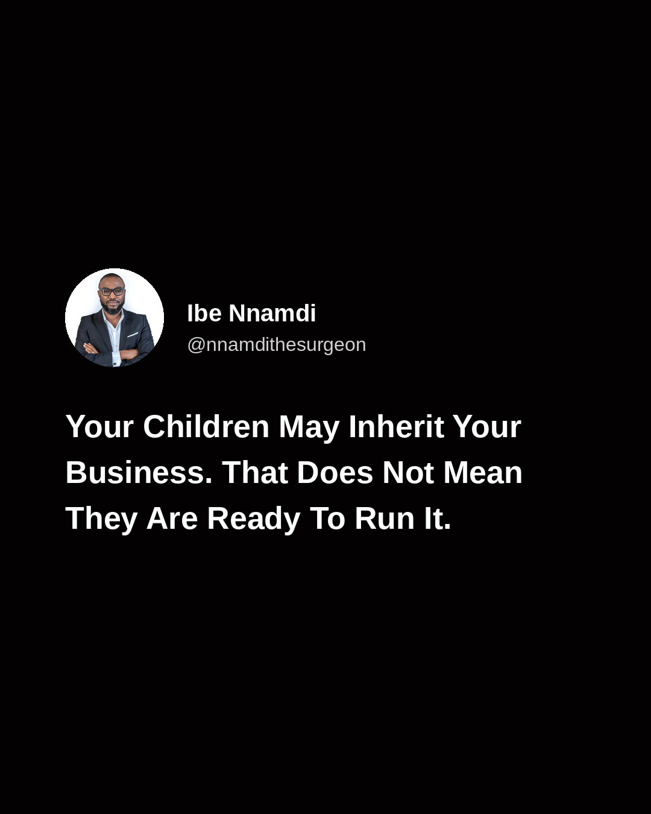

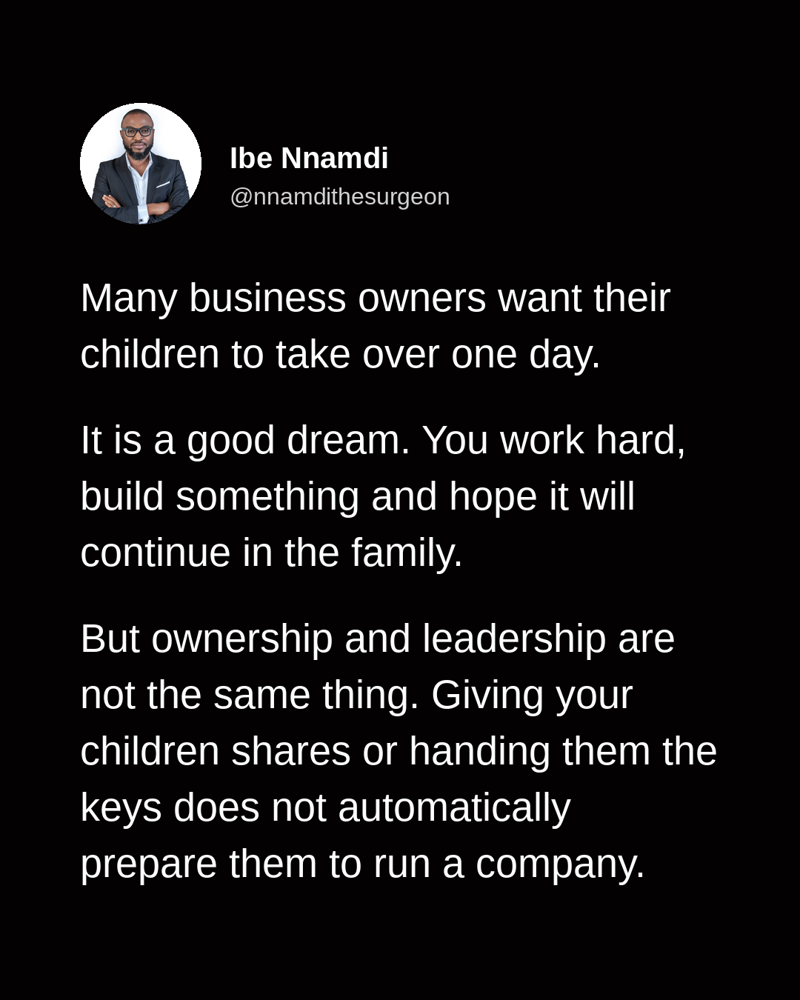

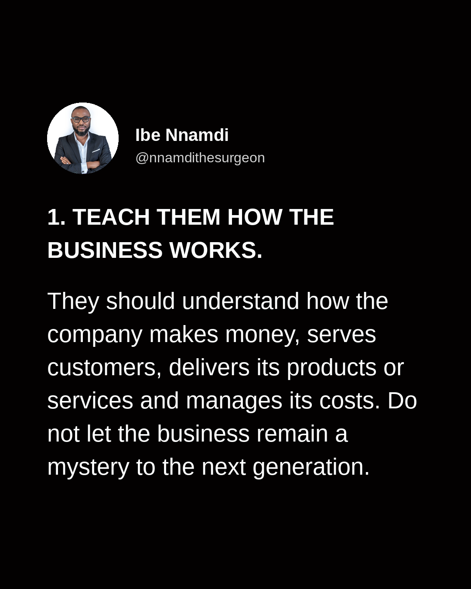

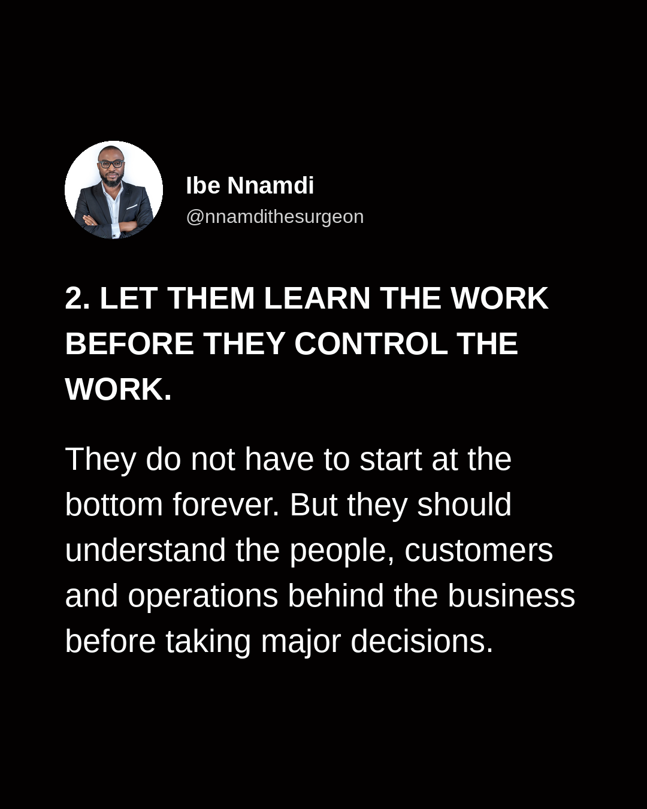

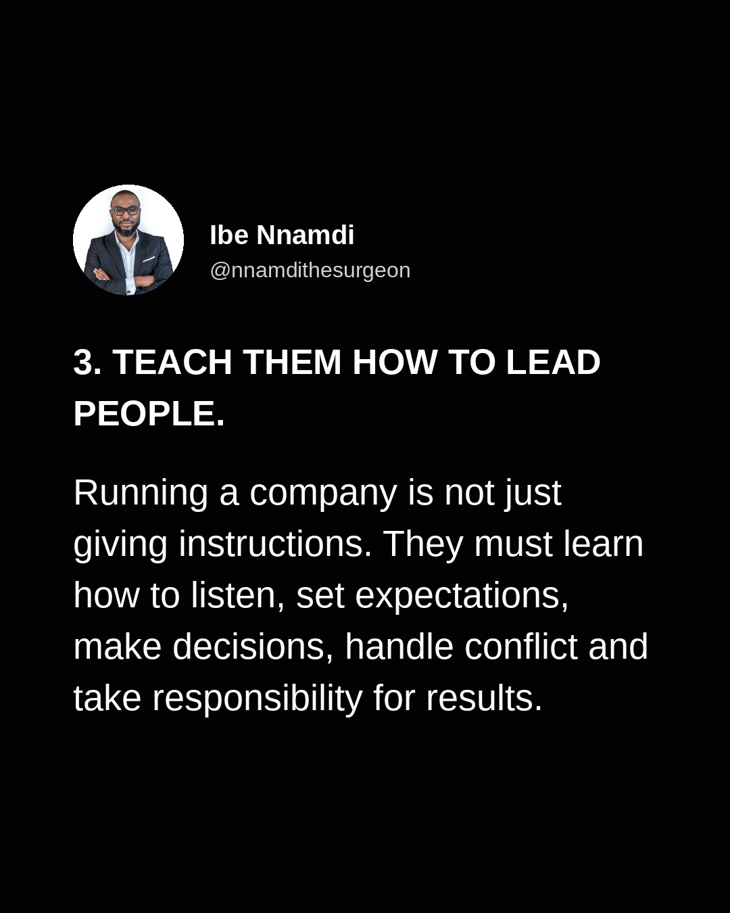

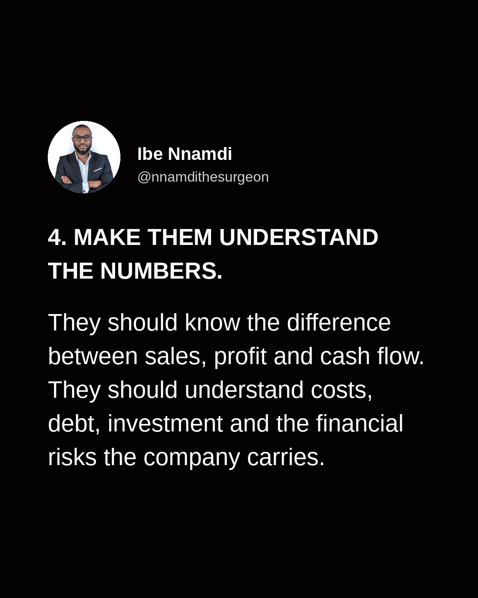

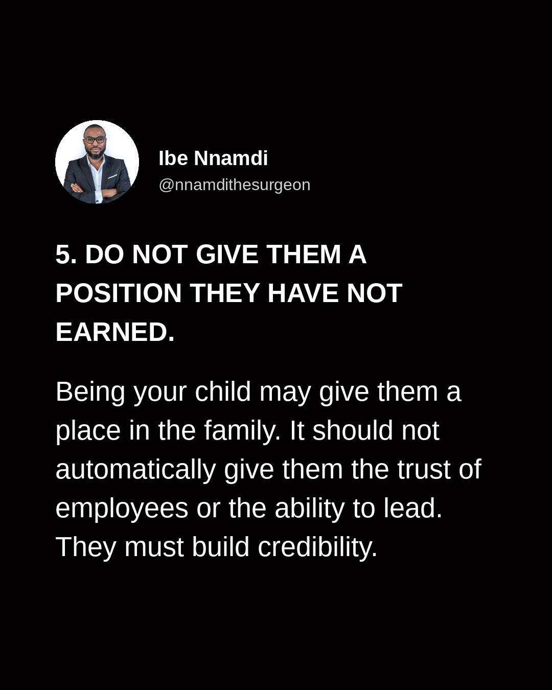

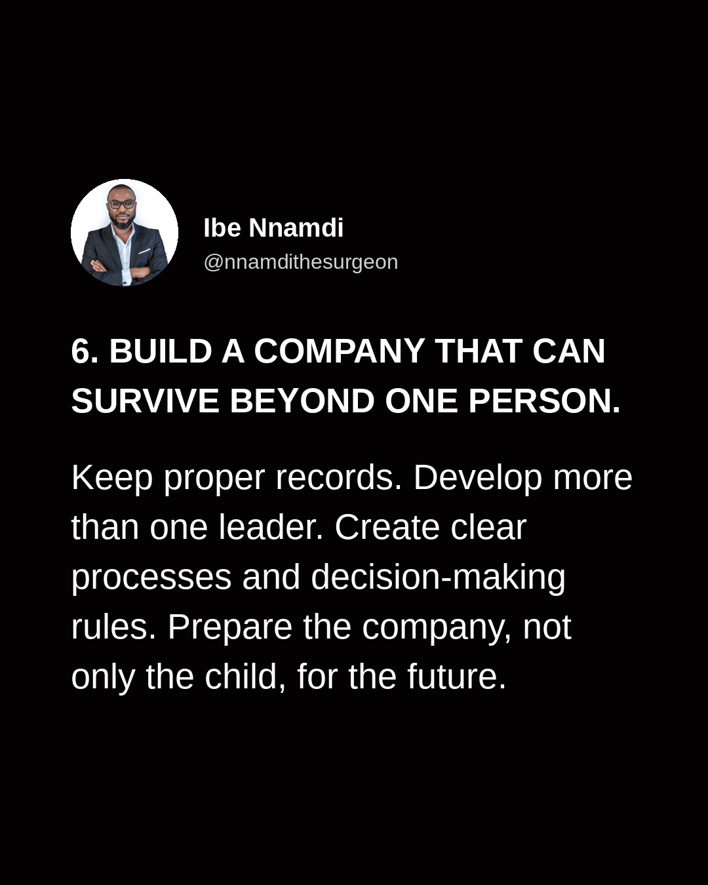

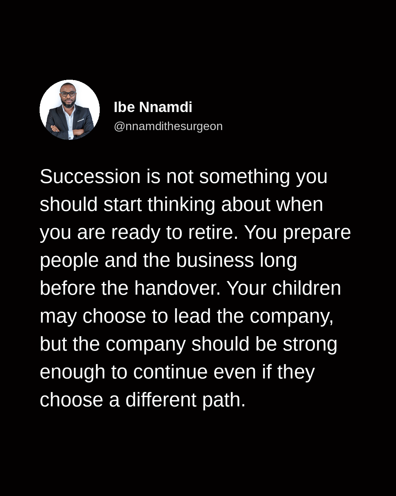

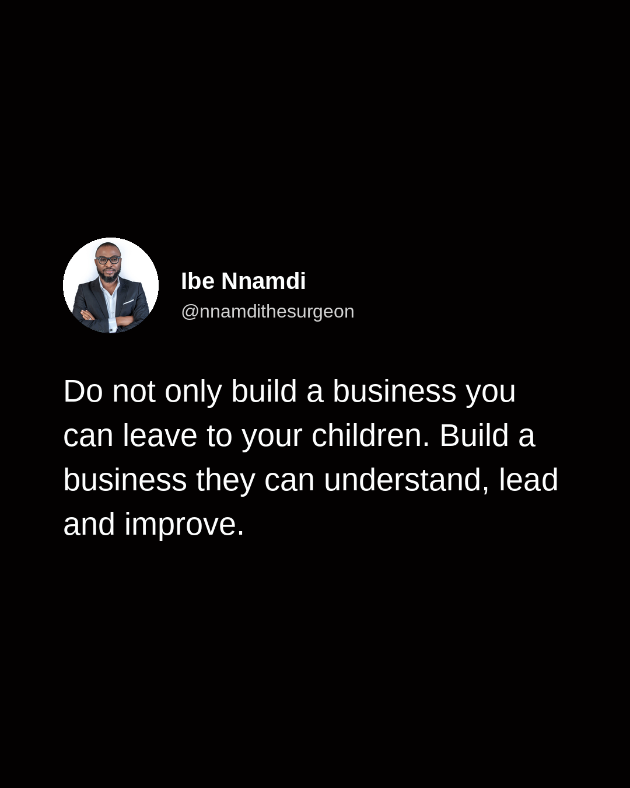

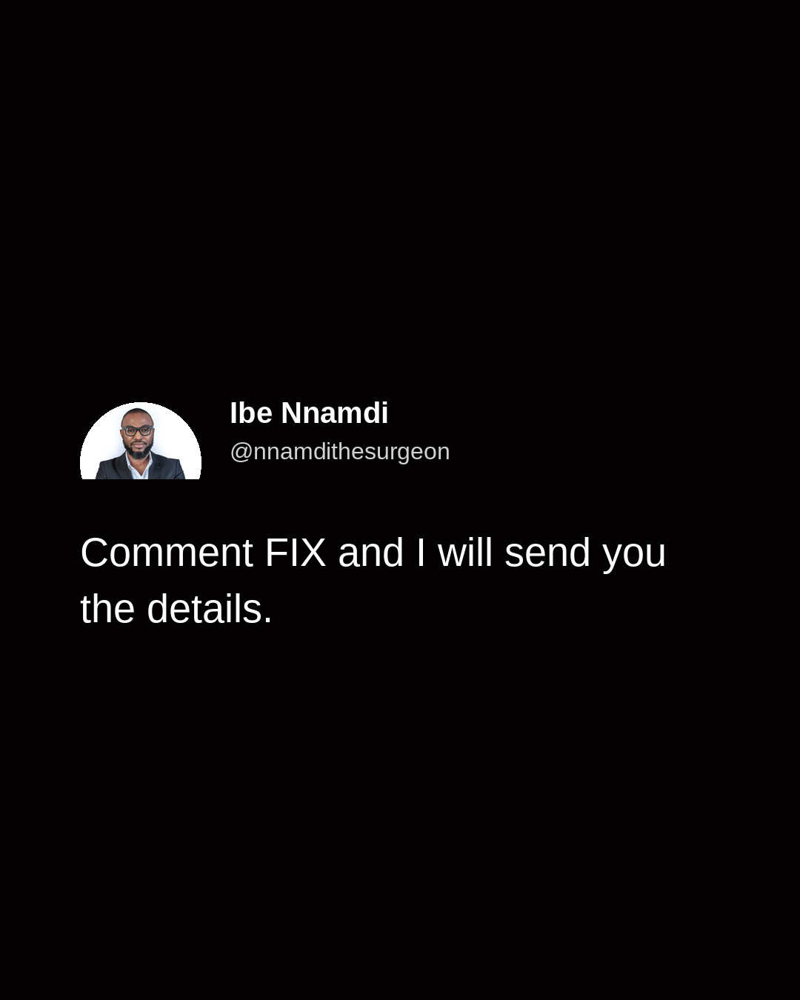

Facebook caption
Your Children May Inherit Your Business. That Does Not Mean They Are Ready To Run It. Many business owners want their children to take over one day. It is a good dream. You work hard, build something and hope it will continue in the family. But ownership and leadership are not the same thing. Giving your children shares or handing them the keys does not automatically prepare them to run a company.
Facebook first comment, Part 1
1. TEACH THEM HOW THE BUSINESS WORKS. They should understand how the company makes money, serves customers, delivers its products or services and manages its costs. Do not let the business remain a mystery to the next generation.
Facebook first comment, Part 2
2. LET THEM LEARN THE WORK BEFORE THEY CONTROL THE WORK. They do not have to start at the bottom forever. But they should understand the people, customers and operations behind the business before taking major decisions.
Facebook first comment, Part 3
3. TEACH THEM HOW TO LEAD PEOPLE. Running a company is not just giving instructions. They must learn how to listen, set expectations, make decisions, handle conflict and take responsibility for results.
Facebook first comment, Part 4
4. MAKE THEM UNDERSTAND THE NUMBERS. They should know the difference between sales, profit and cash flow. They should understand costs, debt, investment and the financial risks the company carries.
Facebook first comment, Part 5
5. DO NOT GIVE THEM A POSITION THEY HAVE NOT EARNED. Being your child may give them a place in the family. It should not automatically give them the trust of employees or the ability to lead. They must build credibility.
Facebook first comment, Part 6
6. BUILD A COMPANY THAT CAN SURVIVE BEYOND ONE PERSON. Keep proper records. Develop more than one leader. Create clear processes and decision-making rules. Prepare the company, not only the child, for the future.
Facebook first comment, Part 7
Succession is not something you should start thinking about when you are ready to retire. You prepare people and the business long before the handover. Your children may choose to lead the company, but the company should be strong enough to continue even if they choose a different path.
Facebook first comment, Part 8
What will your business look like 50 years from now? JOIN ME AT CEO'S ESCAPE 2026 , THE CEO'S PRIVATE BOARDROOM. On 3 December 2026, at Eko Hotel, Lagos, we will spend a full day working on your business, your structure, your growth and your priorities for 2027. This is not another conference. Bring your real business. We will work on it. 30 business owners only. ₦350,000 per seat. To secure your place, contact our team.
Instagram caption
Your Children May Inherit Your Business. That Does Not Mean They Are Ready To Run It. Many business owners want their children to take over one day. It is a good dream. You work hard, build something and hope it will continue in the family. But ownership and leadership are not the same thing. Giving your children shares or handing them the keys does not automatically prepare them to run a company. Do not only build a business you can leave to your children. Build a business they can understand, lead and improve. What will your business look like 50 years from now? JOIN ME AT CEO'S ESCAPE 2026 , THE CEO'S PRIVATE BOARDROOM. On 3 December 2026, at Eko Hotel, Lagos, we will spend a full day working on your business, your structure, your growth and your priorities for 2027. This is not another conference. Bring your real business. We will work on it. 30 business owners only. ₦350,000 per seat. To secure your place, contact our team. - Nnamdi Ibe #NnamdiIbe #BusinessStructure #CompanyBuilding #CEOsEscape #BusinessGrowth
LinkedIn caption
Your Children May Inherit Your Business. That Does Not Mean They Are Ready To Run It. Many business owners want their children to take over one day. It is a good dream. You work hard, build something and hope it will continue in the family. But ownership and leadership are not the same thing. Giving your children shares or handing them the keys does not automatically prepare them to run a company. 1. TEACH THEM HOW THE BUSINESS WORKS. They should understand how the company makes money, serves customers, delivers its products or services and manages its costs. Do not let the business remain a mystery to the next generation. 2. LET THEM LEARN THE WORK BEFORE THEY CONTROL THE WORK. They do not have to start at the bottom forever. But they should understand the people, customers and operations behind the business before taking major decisions. 3. TEACH THEM HOW TO LEAD PEOPLE. Running a company is not just giving instructions. They must learn how to listen, set expectations, make decisions, handle conflict and take responsibility for results. 4. MAKE THEM UNDERSTAND THE NUMBERS. They should know the difference between sales, profit and cash flow. They should understand costs, debt, investment and the financial risks the company carries. 5. DO NOT GIVE THEM A POSITION THEY HAVE NOT EARNED. Being your child may give them a place in the family. It should not automatically give them the trust of employees or the ability to lead. They must build credibility. 6. BUILD A COMPANY THAT CAN SURVIVE BEYOND ONE PERSON. Keep proper records. Develop more than one leader. Create clear processes and decision-making rules. Prepare the company, not only the child, for the future. Succession is not something you should start thinking about when you are ready to retire. You prepare people and the business long before the handover. Your children may choose to lead the company, but the company should be strong enough to continue even if they choose a different path. Do not only build a business you can leave to your children. Build a business they can understand, lead and improve. What will your business look like 50 years from now? JOIN ME AT CEO'S ESCAPE 2026 , THE CEO'S PRIVATE BOARDROOM. On 3 December 2026, at Eko Hotel, Lagos, we will spend a full day working on your business, your structure, your growth and your priorities for 2027. This is not another conference. Bring your real business. We will work on it. 30 business owners only. ₦350,000 per seat. To secure your place, contact our team. - Nnamdi Ibe #NnamdiIbe #BusinessStructure #CompanyBuilding #CEOsEscape #BusinessGrowth